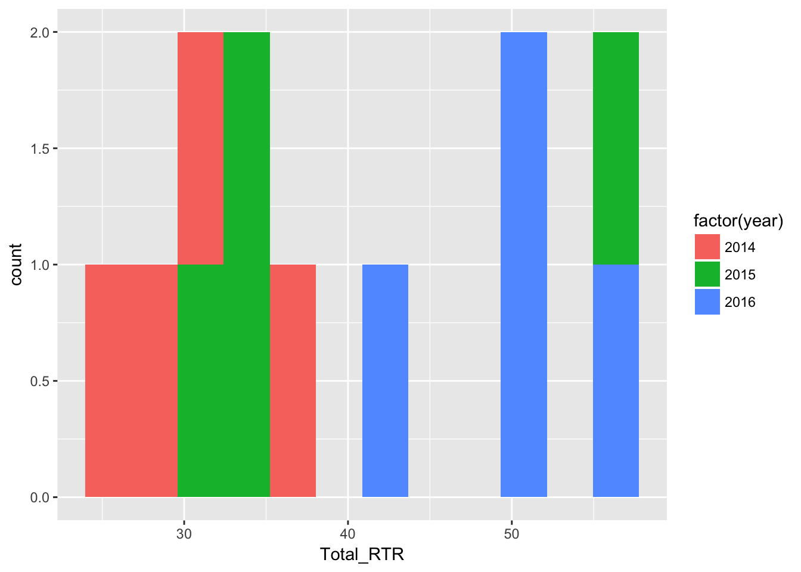
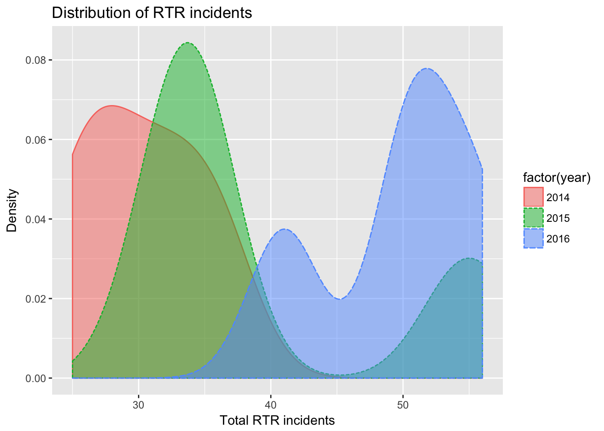
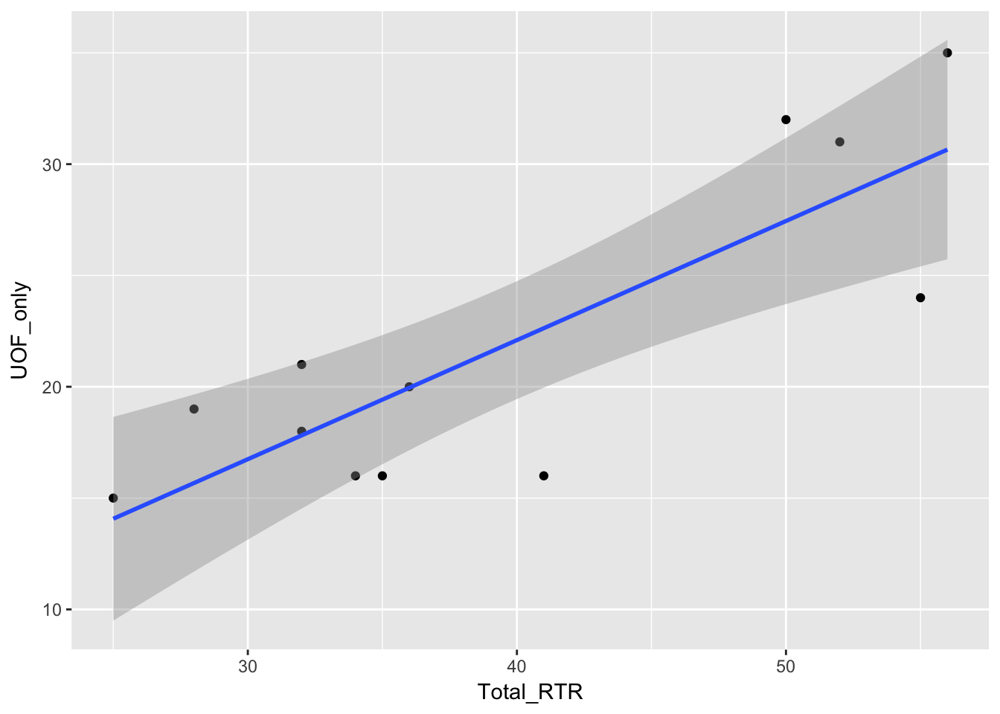
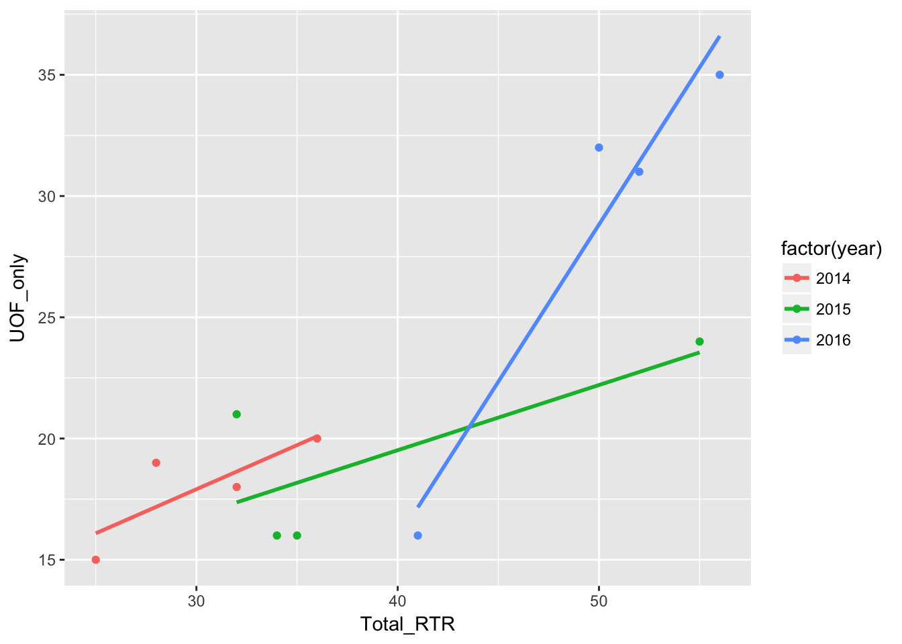
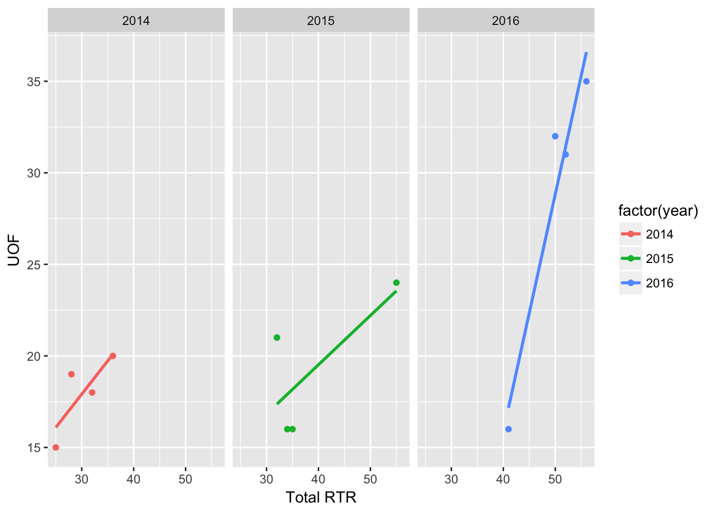
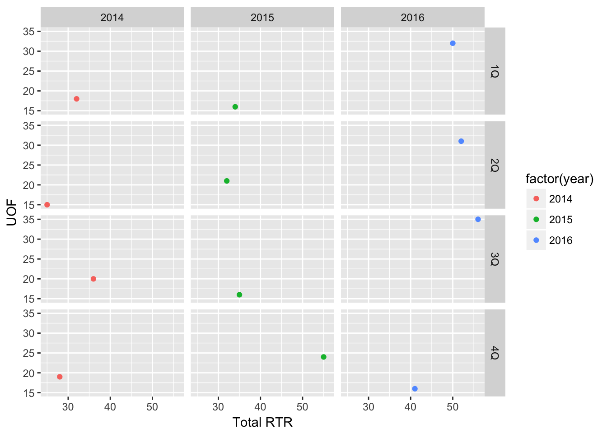
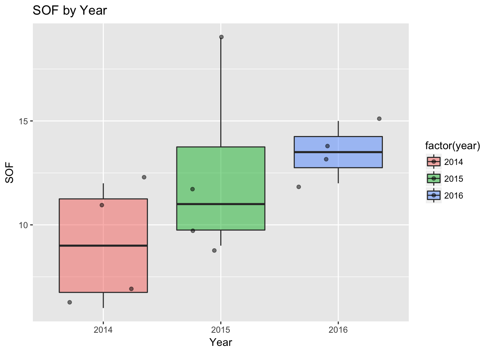
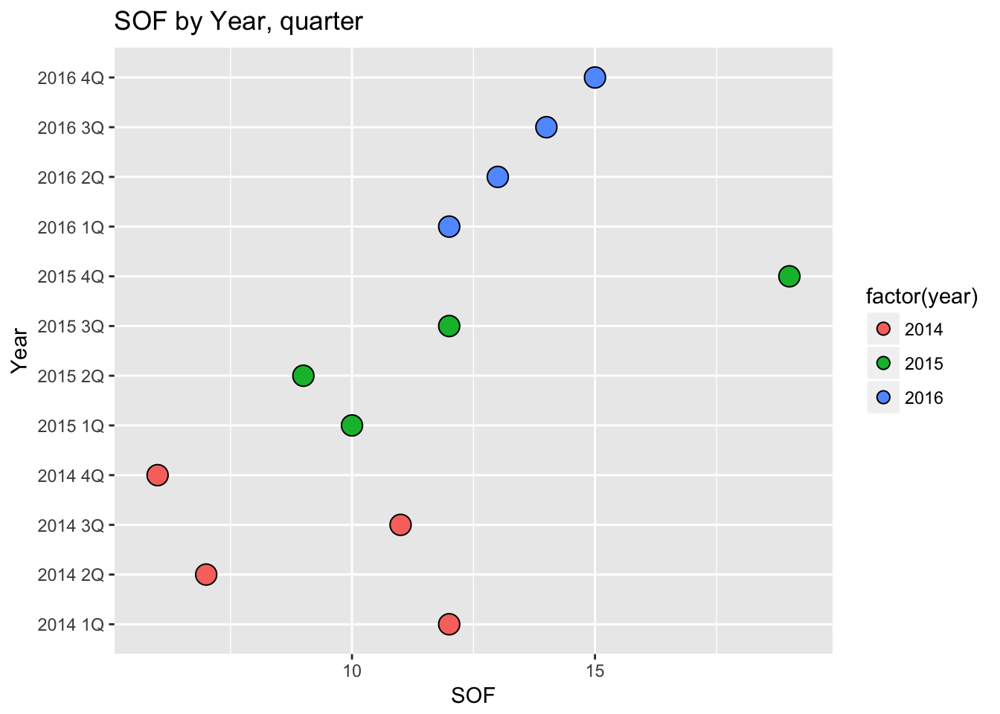

Up until now we’ve been using R’s basic plots to make visualizations. They’re OK, but frankly they can be clunky to put together and the overall design is rather basic.
Fortunately, someone in the R open source community agreed and came up with the ggplot2 library for graphics.
If you’d like to delve deeper into it, here’s the book by the author of the library: http://ms.mcmaster.ca/~bolker/misc/ggplot2-book.pdf
It’s available for purchase, but he’s open-sourced the pdf.
ggplot2 takes care of a lot of design problems so that we can create publication-ready graphics for print and online. And that’s not an easy problem to solve.
It also provides a replacement to many of the basic plots that we’ve explored in the form of “qplot.” q (or quick) plots are meant to be quick visualizations that you use to understand your data in advance of creating a final visualization.
Put it this way: R is used by professionals like sociologists and medical doctors who do complex studies and generate a lot of data. There are specialized libraries like “Array Based CpG Region Analysis Pipeline” that concerns just a single region of dna.
These professionals need to visualize their data for themselves, and then generate professional-looking plots for their publications. qplots are the kind of thing they do for themselves, the full ggplot2 graphic is the kind of thing they submit for publication.
Let’s take a look at our data using qplot. There’s a good introduction here: http://www.statmethods.net/advgraphs/ggplot2.html
First, let’s load in the libraries and data.
library(readr)
library(ggplot2)
library(ggthemes)
df <- read_csv("dfCrime.csv")## Parsed with column specification:
## cols(
## Year_Quarter = col_character(),
## year = col_integer(),
## quarter = col_character(),
## Total_CFS = col_integer(),
## Total_arrests = col_integer(),
## Total_RTR = col_integer(),
## SOF_only = col_integer(),
## UOF_only = col_integer(),
## Transitions = col_integer()
## )summary(df)## Year_Quarter year quarter Total_CFS
## Length:12 Min. :2014 Length:12 Min. :18178
## Class :character 1st Qu.:2014 Class :character 1st Qu.:19663
## Mode :character Median :2015 Mode :character Median :21544
## Mean :2015 Mean :21341
## 3rd Qu.:2016 3rd Qu.:22753
## Max. :2016 Max. :24715
## Total_arrests Total_RTR SOF_only UOF_only
## Min. : 889.0 Min. :25.00 Min. : 6.00 Min. :15.00
## 1st Qu.: 947.8 1st Qu.:32.00 1st Qu.: 9.75 1st Qu.:16.00
## Median : 994.5 Median :35.50 Median :12.00 Median :19.50
## Mean :1013.2 Mean :39.67 Mean :11.67 Mean :21.92
## 3rd Qu.:1046.2 3rd Qu.:50.50 3rd Qu.:13.25 3rd Qu.:25.75
## Max. :1246.0 Max. :56.00 Max. :19.00 Max. :35.00
## Transitions
## Min. : 2.000
## 1st Qu.: 3.000
## Median : 6.500
## Mean : 6.083
## 3rd Qu.: 8.000
## Max. :12.000Three years with four quarters each of response-to-resistance (RTR) incidents from the Elgin police department. That’s broken down by the type of response - show of force only, use of force only and transition - show to use of force.
qplot makes it easy to generate histograms
qplot(Total_RTR,
data=df,
fill=factor(year),
bins = 12
)
qplot(Total_RTR, establishes the plot and states what column we’re looking at (total RTR incidents).
data=df states the dataframe where the column is found
fill=factor(years) separates and colors the data by year. It does that by making the column a factor, grouping all the rows with 2014 in the years column together.
bins = 12 Remember histograms, while resembling bar charts, count the number of values while bar chart show the values. So bins are the number of ways to divide up the value counts.
For instance, in the chart generated there are four values equal-to or greater-than 50 - three from 2016 (blue) and one from 2015 (green).
Here’s a excellent explainer on histograms: https://tinlizzie.org/histograms/
Density is a lot like a histogram but shows the distibution of values as a percent and as a smooth line.
qplot(Total_RTR, data=df,
geom="density",
color=factor(year),
fill=factor(year),
color=factor(year),
linetype = factor(year),
alpha=I(.5),
main="Distribution of RTR incidents",
xlab="Total RTR incidents",
ylab="Density")
qplot(Total_RTR, data=df, sets up the plot as above.
geom=“density”, specifies we want a density chart instead of the default histogram
fill=factor(year), divides the plot and assigns a different color to each factor, as with histogram above.
color=factor(year), and linetype = factor(year), assigns a different type of line based on year and different color. Since it orders the years the same way as fill, the lines get the same color as the fill.
alpha=I(.5), sets the alpha or transparency of the polygons so we can see where they overlap. Range goes from 0 to 1, so .5 means they’re 50% transparent. Wrapping that number in I() simply keeps it out of the legend.
The rest should be obvious.
qplot(Total_RTR,UOF_only,
data=df
) + geom_smooth(method = "lm")
qplot(Total_RTR,UOF_only,data=df compares Total_RTR on the x axis to UOF_only on the y.
geom_smooth(method=“lm”) computes and places the regression line. The gray shadow is the area of 95% confidence. In other words, based on the data it has R predicts that any new data would fall into that gray area 95% of the time. Given how wide the area is, that’s not very impressive. The tighter that area, the more correlation there will likely be.
One more thing to note: Notice how the geom_smooth command was added with a +. That’s a very common way of chaining commands together with ggplot.
qplot(Total_RTR,UOF_only,
data=df,
color=factor(year)
) + geom_smooth(method = "lm", se = FALSE) 
Same thing as above, but color=factor(year) divides the dots by year. When we apply the regression line with geom_smooth it puts three in - one for each year.
se=FALSE hides the 95% confidence area.
Another way of viewing data with different factors is to use a facet grid.
qplot(Total_RTR,UOF_only,
data=df,
color=factor(year),
xlab="Total RTR", ylab="UOF") +
facet_grid(. ~ factor(year)) +
geom_smooth(method = "lm", se = FALSE)
facet_grid(.~factor(year)) takes values for each year and puts them in their own chart side-by-side with the other years.
Replace the .~ with another factor, like quarter and you can subdivde the data even more.
qplot(Total_RTR,UOF_only,
data=df,
color=factor(year),
xlab="Total RTR", ylab="UOF") +
facet_grid(quarter ~ factor(year)) 
Obviously not impressive with such a small dataset, but imagine how useful it is when working with larger ones.
qplot(factor(year), SOF_only,
data=df,
geom=c("boxplot", "jitter"),
fill=factor(year),
alpha=I(.5),
main="SOF by Year",
xlab="Year", ylab="SOF")
Not as widely used, but box plots are pretty useful for understand data.
It divides the most common data into four parts with equal counts of data, or quartiles. Bottom and top quartiles are shown by the extent of the top and bottom lines, while the two middle quartiles are boxed together.
The thick line in the box is the median.
Any points beyond the box and lines are considered potential outliers. So basically, it’s showing that most of the data or predicted data would be between the box and lines, and trying to show what would fall outside that prediction.
factor(year) tells qplot to use year as the x axis, and use it as a factor. That means take anything in 2014 and group them.
geom=c(“boxplot”, “jitter”), tells qplot to create a boxplot. jitter tells it to take the dots and spread them out a bit. If you change that line to geom=“boxplot”, the dots would be hidden.
qplot(factor(Year_Quarter), SOF_only,
data=df,
geom=c("dotplot"),
fill=factor(year),
stackdir = "center", binaxis = "y",
main="SOF by Year, quarter",
xlab="Year", ylab="SOF") + coord_flip()## `stat_bindot()` using `bins = 30`. Pick better value with `binwidth`.
Dot plots use a dot to show value - in this case, they’re like bar charts but with dots.
stackdir = “center”, places the dot at the center for each line, while binaxis tells it which axis to use for the dot values. In this case, we’re looking at SOF.
We have SOF shown by Year_Quarter so there’s one dot for each item or “bin.” Try changing factor(Year_Quarter) to year or quarter and see what happens.
coord_flip() is something you’ll see a lot as we use ggplot2. This takes the chart and flips it - the Y axis appears on the bottom and the X axis on the right.
The reason for this is simple - the year and quarter labels would end up running into each other.
By making this essentially a horizontal instead of a vertical chart, we can just make the chart taller if we need more space. Which, when looking at this on a mobile device, plays into the way people scroll - up and down and not side-to-side.
But try deleting coord_flip() and see what happens.
Next we’ll start working with ggplot2